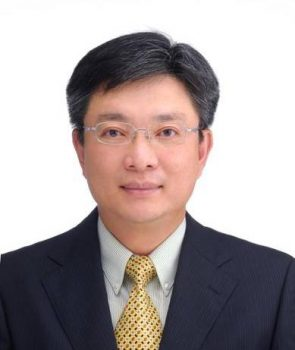

指導教授

邱俊誠 教授
基本資料
- 辦公室：國立交通大學工程五館 722 室
- 電話：(03) 5731881
- 傳真：(03) 5715998
- 信箱：chiou@mail.nctu.edu.tw
現職
- 國立交通大學 電機工程學系 教授
- 工業技術研究院 生醫與醫材研究所 資深特聘研究
學歷
- 美國科羅拉多大學 航太工程學系 博士
- 科羅拉多大學 航空太空工程系 碩士
研究專長
- Micro Electro Mechanical System
- Dynamics Analysis and Control of Structures
- Image Stabilizer
- Servomechanism System
- Non-Invasive Bio-medical Sensors
- Analog-Front-End Circuit
- CMOS-MEMS Smart Sensor
經驗
- 工業技術研究院 生醫與醫材研究所 副所長 (2017/01 – 2017/07)
- 中華民國微系統暨奈米科技協會 理監事會 理事長 (2016/12 – 2019/04 )
- 財團法人工業技術研究院 生醫與醫材研究所 技術長 (2016/08 – 2017/07)
- 國立交通大學電機工程學系（所） 國立交通大學電機工程學系（所）教授且兼任(借調)
- 工業技術研究院生醫與醫材研究所副所長兼技術長 (2016/08 – 2017/07 )
- 科技部 生醫與醫材轉譯加值人才培訓 ANCHOR UNIVERSITY 計畫 共同主持人 (2014/08 – 2015/07)
- 科技部 奈米國家型科技計畫 生醫農學召集人 (2011/01 – 2015/06)
- 中國醫藥大學 醫學系 教授且兼任生醫工程研發中心主任(借調) (2010/08 – 2014/07)
- 國立交通大學 智慧型仿生系統研究中心 主任 (2008/08 – 2011/08)
- 國立交通大學 晶片系統國家型科技計畫辦公室 專案召集人 (2007/06 – 2010/12)
- 國立交通大學 電機與控制工程學系 系主任 (2006/08 – 2009/07)
- 國科會 中區微機電中心 副主任 (2001/08 – 2003/07)
- 國立交通大學 電機與控制工程學系 教授 (1999/08 – 2009/07)
專利與專書
- Mang Ou-Yang, Jin-Chern Chiou, Ting-Wei Huang, Yi-Chun Tsai, “ System and method for measuring microfluctuation of accommodation,” US Patent No: 10314478 B2, Jun. 17, 2017.
- 歐陽盟、邱俊誠、黃庭緯、蔡宜君，『視調節微波動之量測系統及方法』，中華民國專利發明第I616186號，公告(開)日：2018/03/01。
- 邱俊誠、楊自森、黃煜傑、葉冠庭，『非侵入式眼压传感元件』，中國專利發明第2539538號，公告(開)日：2017/07/04。
- Jin-Chern Chiou, Shang-Wei Tsai, “Cmos-based process for manufacturing a semiconductor gas sensor,” US Patent No: US9746437 B1, Aug. 29, 2017.
- Jin-Chern Chiou, Tzu-Sen Yang, Yuan-Chen Liu, “Piezoelectric speaker driving system and method thereof , ” US Patent No: US 9723411 B2, Aug. 1, 2017.
- Jin-Chern Chiou, Shun-Hsi Hsu, “Impedance-to-digital converter, impedance-to-digital converting device, and method for adjustment of impedance-to-digital converting device”, US9716498 B2, July 7, 2017
- 歐陽盟、邱俊誠、黃庭緯、柯美蘭、蔡宜君、寸碧秀、鄭偉德，『視覺生理用頭戴式系統』，中華民國專利發明第I580396號，公告(開)日：2016/12/16。
- 歐陽盟、邱俊誠、黃庭緯、胡俊誠、莊竣崴，『头戴式人眼追踪系统』，中國專利發明第2298336號，公告(開)日：2016/11/23。
- 邱俊誠、張寶元、張晃源，『電解槽』，中華民國專利發明第I535896號，公告(開)日：2016/11/16。
- 邱俊誠、張寶元、黃煜傑、吳晉晟、張晃源，『電解槽控制系統』，中華民國專利發明第I535893號，公告(開)日：2016/11/16
- 歐陽盟、邱俊誠、黃庭緯、鄭乃綸，『可攜式檢測裝置』，中華民國專利發明第I585386號，公告(開)日：2016/11/16
- 歐陽盟、黃庭緯、邱俊誠、段正仁、林永峻、黃茂修，『廣角取像裝置』，中華民國專利發明第I581052號，公告(開)日：2016/10/16
- Jin-Chern Chiou, Yu-Chieh Huang, “Physiological signal collection unit and detector thereof,” US Patent No: US 9420961 B2, Aug. 23, 2016.
- 歐陽盟、黃庭緯、邱俊誠、柯美蘭、葉伯壽、吳志成、鄭偉德、陳胤源、寸碧秀，『雙瞳孔量測方法以及雙瞳孔量測裝置』，中華民國專利發明第I554246號，公告(開)日：2016/07/01
- 邱俊誠、楊自森、劉遠振，『壓電揚聲器驅動系統和其驅動方法』，中華民國專利發明第I559781號，公告(開)日：2016/03/01
- 邱俊誠、張志瑋、楊自森、『整合被动元件的半导体装置』，中國專利發明第1936141號，公告(開)日：2016/01/27。
- Mang Ou-Yang, Jin-Chern Chiou, Ting-Wei Huang, Chun-Cheng Hu and Jyun-Wei Jhuang, “Head-mount eye tracking system with improved determination of gazing position,” US Patent No: US9213406 B2, Dec. 15, 2015
- 歐陽盟、邱俊誠、黃庭緯、胡俊誠、莊竣崴，『頭戴式人眼追蹤系統』，中華民國專利發明第I505260號，公告(開)日：2015/10/21
- Jin-Chern Chiou, Chih-Wei Chang and Tzu Sen Yang,“Semiconductor Device Integrating Passive Elements,” US Patent No: US 9147655 B2, Sep. 29, 2015
- Kuan-Chou Hou, Mang Ou-Yang and Jin-Chern Chiou, “Electrical Calibrated Radiometer,” US Patent No: US 9097579 B2, Aug. 4, 2015
- 歐陽盟、鄭偉德、賴建成、龔益群、陶冠亨、邱俊誠、吳憲明，『摄影装置』，中國專利發明第1697360號，公告(開)日：2015/06/17
- 邱俊誠、張志瑋、楊自森，『整合被動元件之半導體裝置』，中華民國專利發明第I488286號，公告(開)日：2015/06/11
- 邱俊誠、楊自森、黃煜傑、葉冠庭，『非侵入式眼壓感測元件』，中華民國專利發明第I523637號，公告(開)日：2015/04/01
- Tzuen-Hsi Huang, Ying-Chun Lin, Wei-Shang Su, Huey-WenCheng, Hong-Yi Huang, Ching-Hsing Luo and Jin-Chern Chiou, “WirelessIntraocular Pressure Monitoring Device, and Detecting Module Thereof,” US Patent No: US 8939906 B2, Jan. 27, 2015
- Jin-Chern Chiou, Shih-Che Lo, Hsin-Hsueh Tsai, Jia-Hung Yan, Fong Yuan Chang and Hui-Mei Chang,“Sensing Pad,” US Patent No: US 8922225 B2, Dec. 30, 2014
- 邱俊誠、黃煜傑，『生理信号搜集单元及其探头』，中國專利發明第1468971號，公告(開)日：2014/08/27
- 邱俊誠、曾建凱「無線眼壓監控裝置、感測單元及讀取單元」，中華民國專利發明第I442903號，公告(開)日：2014/07/01。
- Jin-Chern Chiou, Ming-Hsui Tsai, Mang Ou-Yang, Shuen-De Wu, Yao-Fang Hsieh, Ting-Wei Huang and Yung-Jiun Lin, “Microscanning System with Relay Lens Device and Hyper-Spectrometer Device,” US Patent No: US 8760647 B2, Jun. 24, 2014
- 邱俊誠、侯冠州、歐陽盟「電校式輻射計」，中華民國專利發明第I439679號，公告(開)日：2014/06/01
- Jin-Chern Chiou, Shih-Che Lo, Yung-Jiun Lin and Hsin-Hsueh Tsai, “Pressure Measurement Member,” US Patent No: US 8714020 B2,May 6, 2014
- 歐陽盟、鄭偉德、賴建成、龔益群、陶冠亨、邱俊誠、吳憲明，『攝影裝置』，中華民國專利發明第I513275) ，公告(開)日：2014/02/01
- 邱俊誠、黃煜傑，『生理訊號蒐集單元及其探頭』，中華民國專利發明第I423785號，公告(開)日：2014/01/21
- Jin-Chern Chiou, Tsann Lin, Shih-Che Lo, Jeng-Ren Duann, Sheng-Chuan Liang and Yung-Jiun Lin, “Fall-Down Alarm System,” US Patent No: US 8610584 B2, Dec. 17, 2013
- 邱俊誠、歐陽盟、黃庭緯、陳子賢「節能式色溫調校方法及其調校裝置」，中華民國專利發明第I417696號，公告(開)日：2013/12/01
- 邱俊誠、歐陽盟、黃庭緯、陳子賢、謝耀方，『以線排列光纖掃瞄之頻譜成像裝置及其方法』，中華民國專利發明第I577984號，公告(開)日：2013/10/01
- Jin-Chern Chiou, Yung-Jiun Lin, Tzu-Kan Chen,Meng-Hsin Kuo, Cheng-Te Tseng and Chia-Hsi Tsai, “Micro-Optical Image Stabilizer,” US Patent No: US 8098289 B2, Jan. 17, 2012
- Jin-Chern Chiou, Yung-Jiun Lin, Tzu-Kan Chen,Meng-Hsin Kuo, Cheng-Te Tseng and Chia-Hsi Tsai, “Micro-Optical Image Stabilizer,” US Patent No: US 8035693 B2, Oct. 11, 2011.
- 邱俊誠、張志瑋「三維微探針陣列的組裝結構」，中華民國專利發明第I348552號，公告(開)日：2011/09/11
- Jin-Chern Chiou and Chih-Wei Chang,” THREE-DIMENSIONAL MICROPROBE ARRAY,” US Patent Number 7946050 B2 , May 24, 2011
- Jin-Chern Chiou, Chih-Wei Chang and Chen-Chun Hung, “Microprobe array structure and method for manufacturing the same,” US Patent Number 7941201 B2 , May. 10, 2011
- Jin-Chern Chiou and Chih-Wei Chang, “Integration structure of semiconductor circuit and microprobe sensing elements and method for fabricating the same,” US Patent Number 7875479 B2, Jan. 25, 2011
- 邱俊誠、侯冠州、林君穎、張志瑋「定位定量黏著封裝方法與結構」中華民國專利號：I380384，公告(開)日：2010/09/16
- 邱俊誠、張志瑋、洪振鈞「微探針陣列結構」，中華民國專利發明第I328441號，公告(開)日：2010/08/11
- 邱俊誠、張志瑋「半導體電路與微探針感測元件的整合結構及其製造方法」中華民國專利號：I379342 公告(開)日：2009/11/16.
- Cheng Te Tseng, Jin Chern Chiou, Tzu Kan Chen, Chia Hsi Tsai, Yung Jiun Lin and Meng Hsin Kuo, “Micro-optical image stabilizer,” US Patent, Filed on: 2009-05-05; Application Number: 12435418.
- 邱俊誠,張志瑋, “半導體電路與微探針感測元件的整合結構及其製造方法,” 中華民國專利：97117512 ,申請日期: 2008/05/13.
- Cheng Te Tseng, Jin Chern Chiou, Tzu Kan Chen, Chia Hsi Tsai and Yung Jiun Lin, “Micro-optical image stabilizer,” US Patent, Filed on: 2007-07-20; Application Number: 11780483.
- 邱俊誠,張志瑋, “三維微探針陣列的組裝結構,”中華民國專利：96142516 ,申請日期: 2007/11/09,與美國專利: 12/128804,申請日期:2008/05/29.
- 邱俊誠,張志瑋, “半導體電路與微探針感測元件的整合結構及其製造方法,”中華民國專利：97117512 ,申請日期: 2008/05/13.
- 邱俊誠,洪振鈞,張志瑋, “一種可快速批次製造生理訊號感測晶片的方法; A Rapid Batch Fabrication Method in Manufacturing Physiological Signal Sensing Chip,”中華民國專利：096100248 ,申請日期: 2007/01/03, 美國專利: 7429333B2,通過日期:2008/09/30.
- 邱俊誠,張志瑋,洪振鈞, “一種具有自我固定功能可用於感測生理訊號的微探針陣列設計與製造方法; A design and fabrication method of micro probe array with self-stabilization capability for biopotential measurements,”中華民國專利：095120528 ,申請日期:2006/06/09, 美國專利: 11/599303 ,申請日期:2006/11/15.
- 邱俊誠，微機電系統與感測器(MEMS)，專輯主編，電子月刊2005年1月
- Jin-Chern Chiou and Y. C. Lin, “A Control System for an Electrostatically Driven Microelectromechanical Device,” US Patent No: US 20030189807A1, Oct. 9, 2003.
- 邱俊誠、林育成， “靜電驅動微機電裝置之控制系統”，中華民國專利發明第一七七五一一號，中華民國九十二年一月十一日.
- 周正三、鄒慶福、蔡明霖、鄭元偉、邱俊誠、林煒挺, “電容式壓力微感測元件及其製造方法與訊號讀取方式”, 中華民國專利，公告日期2003年7月11日，專利公告號 00541503.
- 戴基福、高崇洋、沈育霖、邱俊誠， “堆高機傾覆訊號測定方法及預警傾覆裝置” ，中華民國專利發明第一五五三六九號，中華民國九十一年九月四日.
- 戴基福、吳世雄、高崇洋、邱俊誠， “塔式起重機用吊掛不平衡監控裝置” ，中華民國專利發明第一六一二五九號，中華民國九十二年九月五日.
- 邱俊誠，微機電系統技術與應用，第九章:系統整合與介面，行政院國科會精密儀器發展中心，中華民國九十二年七月.(專書)
- C. C. Wang, Jin-Chern Chio u, and Shih-Tung Cheng, “Electric Current Compensation Circuit for Brushless Motors for Reducing Ripples in Output Torques During Phase Change,”美國專利(Patent Number/Date: US005821725A, Oct.13,1998)
- 王中呈、邱俊誠、鄭泗東， “無刷式主軸馬達之電流補償迴路”中華民國專利新型第一二六七七六號，中華民國八十六年十一月二十八日.
- 吳炳飛、邱俊誠、陸儀斌， 光碟機技術研究，第四~七章，中華民國八十七年六月. (專書)
- Park, K. C., Chiou, J. C., and Downer, J. D., “Staggered Solution Procedures for Multibody Dynamics Simulations,” Mechanics and Control of Flexible Structures, Ed. J. L. Junkins, AIAA, 1990.(專書)
- Park, K. C., Chiou, J. C., and Downer, J. D., “Recent Advances in Multibody Dynamics Analysis Procedures,” in Computational Methods in Bioengineering, Edited by R. L. Spilker, and B. R. Simon, 1988, BED-Vol. 9, pp. 53-69. (專書)